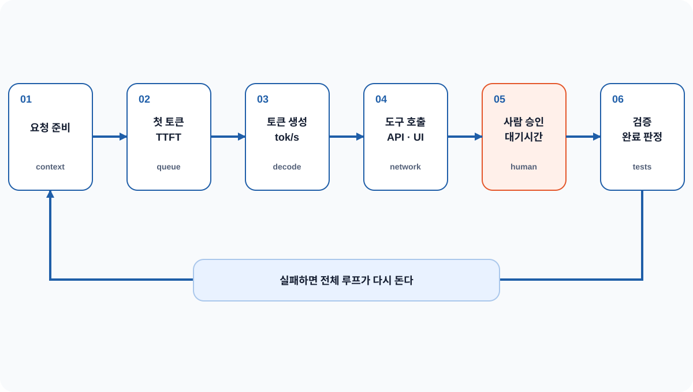
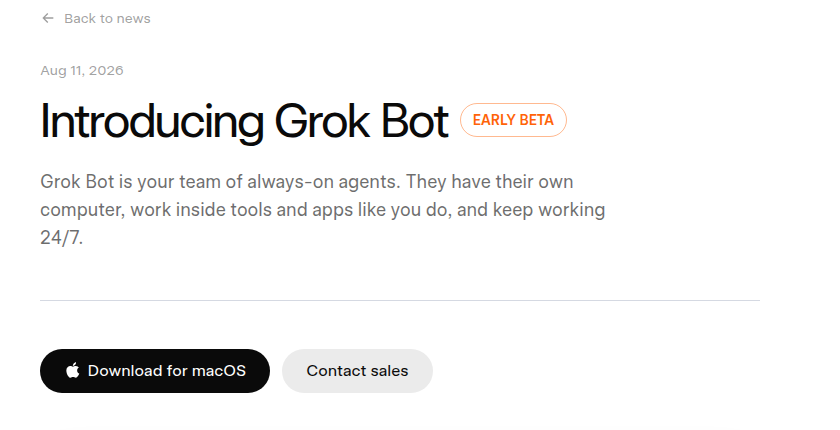
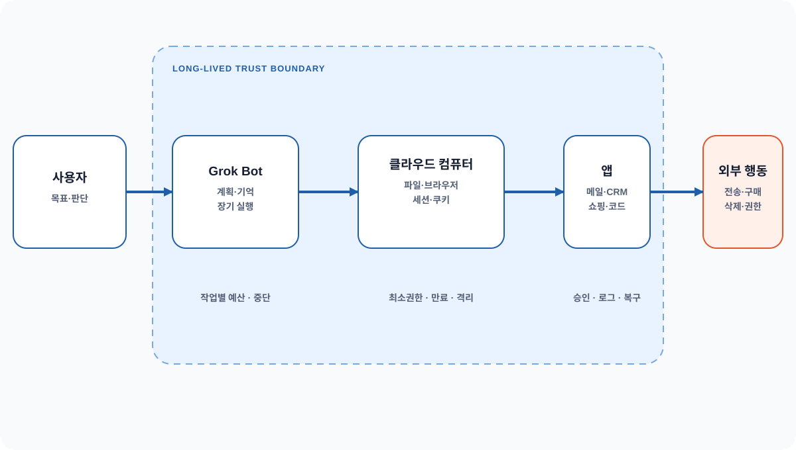
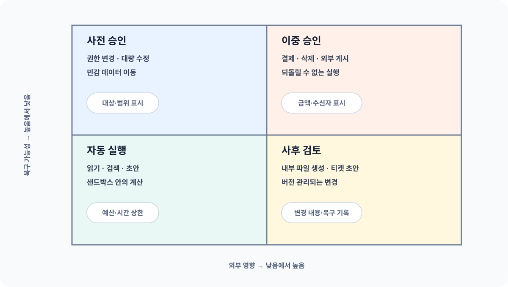
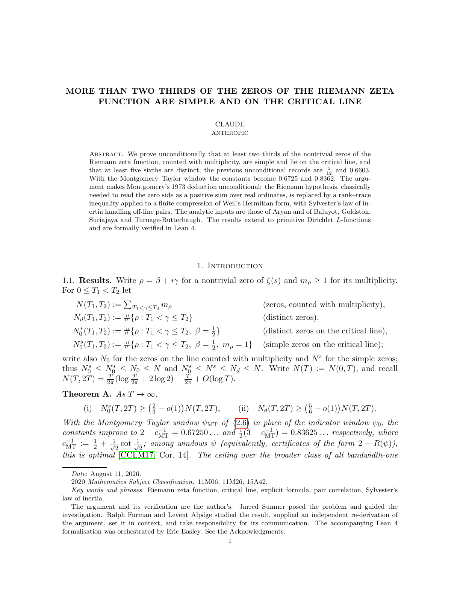
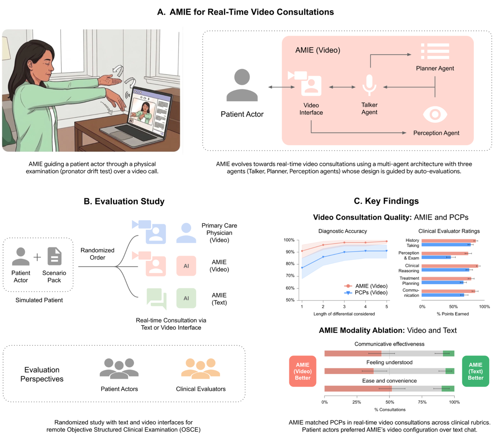

2026.08.15 00:00 → 08.21 09:53 KST
AI에게 질문만 하던 단계를 넘어,
이제는 일을 맡긴다
빠르게 답하는 모델, 전용 클라우드 컴퓨터에서 일하는 에이전트, 직접 운영할 수 있는 오픈 모델이 한꺼번에 등장했다. 이제는 모델 점수뿐 아니라 업무를 끝내는 데 걸리는 시간, 에이전트에게 줄 권한, 비용과 검증 절차까지 함께 비교해야 한다.
이번 주에는 모델의 지능보다 ‘일을 끝내는 과정’이 더 중요해졌다
이번 주 주요 소식 10개는 한 가지 질문으로 모인다. 이제는 AI가 얼마나 똑똑한지만 물어서는 부족하다. 결과를 얼마나 빨리 내는지, 로그인된 앱에서 어디까지 행동할 수 있는지, 우리 장비에서 얼마의 비용으로 실행되는지, 문제가 생겼을 때 누가 멈추고 되돌릴 수 있는지도 함께 따져야 한다.
 위의 세 가지는 30분 발표에서 자세히 다루고, 아래의 일곱 가지는 같은 변화가 연구·조직·인프라로 번지는 모습을 보여 준다. 그림을 클릭하면 전체화면에서 확대해 볼 수 있다.
위의 세 가지는 30분 발표에서 자세히 다루고, 아래의 일곱 가지는 같은 변화가 연구·조직·인프라로 번지는 모습을 보여 준다. 그림을 클릭하면 전체화면에서 확대해 볼 수 있다.세 가지 변화가 특히 중요하다
초당 출력 토큰 수가 높아지면 대화가 부드러워지는 데서 끝나지 않는다. 한 근무일에 반복할 수 있는 코딩·연구 실험과 장애 대응 횟수도 달라진다.
에이전트가 브라우저·메일·결제·파일을 다루기 시작하면 로그인 정보의 유효 기간, 사람 승인, 작업 기록, 되돌리기가 정확도만큼 중요해진다.
라이선스, 양자화, 메모리, 실행 프로그램, 동시 사용자 수, 내부 평가까지 모두 갖춰야 실제 서비스에 쓸 수 있다.
| # | 소식 | 확인된 내용 | 이렇게 해석하면 곤란하다 |
|---|---|---|---|
| 1 | Gemini 3.7 Flash · GPT-5.6 Ultrafast | 속도와 응답 시간을 별도 상품으로 제시 | 389.5와 750은 같은 조건에서 잰 값이 아님 |
| 2 | Grok Bot | 전용 클라우드 컴퓨터에서 여러 앱을 다루는 베타 | 사람 없이 안전하게 일한다는 독립 검증은 없음 |
| 3 | Qwen 3.8 27B | 270억 비전·언어 모델·26만 토큰·Apache 2.0 | 17GB로 줄여 실행해도 빠른 서비스가 보장되지는 않음 |
| 4 | DeepSeek V4 Pro + DSpark | 모델과 답변 생성을 앞당기는 실행 프로그램을 함께 공개 | 오픈 모델이라고 장비 부담이 작은 것은 아님 |
| 5 | Claude 제타 연구 | 임계선 위 단순 영점의 하한 ≥2/3, Lean 형식 증명 | 리만 가설을 67% 풀었다는 뜻이 아님 |
| 6 | Claude 텍스트 워터마크 | 향후 모델에 비밀 키를 이용한 통계 패턴을 넣을 계획 | 현재 모든 출력의 저자를 가려내는 도구는 아님 |
| 7 | AMIE Video | 100개 시나리오에서 모의 영상 상담 300회를 비교 | 실제 진료 현장에서 안전성을 입증한 연구는 아님 |
| 8 | 기업 AI 이용 통계 | 상위 10% 기업은 중간 기업보다 사용자당 토큰을 8.3배 사용 | 토큰 양이 사업 가치를 직접 측정하지는 않음 |
| 9 | AI 인프라 금융 | 6개 금융사가 5,000억 달러 이상의 장기 자금 조달 계획을 발표 | 즉시 집행된 투자금이나 NVIDIA의 매출은 아님 |
| 10 | Amazon 희귀 서적 탐사 | AirTag로 책이 VGT3 스캔 시설에 도착한 경로를 확인 | 어떤 데이터셋과 모델에 썼는지는 공개되지 않음 |
숫자가 같아 보여도, 측정한 사람과 조건이 다르면 의미가 달라진다
제품 발표, 제한 공개, 연구 결과, 회사가 공개한 이용 통계, 언론의 탐사 보도는 근거의 성격이 서로 다르다. 아래 네 질문을 각 소식에 적용하면 눈에 띄는 숫자와 실제로 확인된 사실을 구분할 수 있다.
지금 쓸 수 있는가
누가 어떤 라이선스와 가격, 이용 범위로 공개했는지 확인한다. 일부 고객에게만 여는 시험 단계와 정식 제공을 구분한다.
무엇을 실험했는가
어떤 시나리오에서 누가 참여했고, 무엇과 비교했으며, 누가 평가했는지 확인한다. 실제 환경과 다른 조건도 함께 본다.
누구의 데이터인가
회사가 공개한 고객 데이터는 그 회사 제품 안의 움직임을 보여 준다. 전체 시장이나 사업 성과로 바로 확대해서 해석하지 않는다.
어디까지 확인했는가
관찰·문서·증언으로 확인한 사실과 아직 공개되지 않아 추정만 가능한 부분을 구분한다.
- 통계 방식 — 최대값, 중앙값, 평균, 비율 가운데 무엇인가?
- 무엇을 셌나 — 사용자, 메시지, 토큰, 상담, 모델 출력 가운데 무엇을 기준으로 삼았나?
- 측정 조건 — 장비, 추론 방식, 출력 길이, 동시 요청 수, 사람의 개입 정도는 같았나?
- 공개하지 않은 내용 — 가격, 실패율, 데이터 범위, 검증 단계 가운데 무엇이 빠졌나?
01 · 이제는 모델의 지능만큼 답변 속도도 중요하다
Google은 8월 13일 Gemini 3.7 Flash를 정식 출시했고, OpenAI는 같은 날 GPT-5.6 Sol을 Cerebras에서 최대 초당 750토큰으로 실행하는 Ultrafast를 제한적으로 공개했다. 하나는 누구나 쓸 수 있는 정식 제품이고 다른 하나는 일부 고객만 쓰는 시험 단계라 직접 맞대결할 수는 없다. 다만 두 회사 모두 높은 수준의 모델을 빠르게 제공하는 능력을 별도 상품으로 내세웠다는 점은 같다.
389.5와 750을 그대로 비교할 수 없는 이유
Artificial Analysis에 표시된 Gemini 3.7 Flash의 초당 389.5토큰은 여러 측정값을 크기순으로 놓았을 때 한가운데에 오는 중앙값이다. 반면 초당 750토큰은 OpenAI가 Cerebras 기반 Ultrafast에서 낼 수 있다고 밝힌 최대값이다. 중앙값은 일반적인 요청에서 기대할 만한 속도를, 최대값은 좋은 조건에서 도달할 수 있는 상한을 뜻한다. 사용한 장비, 입력과 출력 길이, 동시에 처리한 요청 수, 네트워크 위치도 다르므로 두 수치만으로 어느 쪽이 더 빠른지 결론 내릴 수 없다.
 둘 다 중요한 수치지만 같은 실험에서 나온 결과는 아니다. 직접 비교하려면 같은 지역·입력문·출력 길이·동시 요청 수·측정 구간에서 다시 재야 한다.
둘 다 중요한 수치지만 같은 실험에서 나온 결과는 아니다. 직접 비교하려면 같은 지역·입력문·출력 길이·동시 요청 수·측정 구간에서 다시 재야 한다.| 지표 | 무엇을 재는가 | 빠뜨리기 쉬운 조건 | 어디에 쓰는가 |
|---|---|---|---|
| 첫 토큰 대기시간(TTFT) | 요청부터 첫 글자까지 | 대기열·입력 길이·캐시 | 대화·실시간 화면 |
| 초당 출력 토큰 | 답변을 만드는 구간의 속도 | 출력 길이·생성 설정·묶음 처리 | 긴 글 생성·코딩 반복 |
| 도구 대기시간 | 검색·브라우저·API 대기 | 네트워크·재시도·호출 제한 | 외부 시스템 병목 확인 |
| 승인 대기시간 | 사람이 검토하고 승인한 시간 | 알림·표시 정보·담당자 | 위험한 행동의 절차 |
| 업무 완료시간 | 한 업무가 검증까지 끝난 시간 | 실패·재작업·사람 수정 | 실제 생산성·용량 계획 |
초당 생성 속도가 두 배여도 업무가 두 배 빨라지지 않는 이유
에이전트가 업무 하나를 끝내는 시간은 출력 토큰 수를 초당 토큰 수로 나눈 값보다 길다. 요청을 준비하고, 첫 글자가 나오기를 기다리고, 검색이나 API를 호출하고, 사람이 승인하고, 결과를 검사하는 시간이 모두 더해진다. 실패하면 일부 작업을 다시 해야 한다. 전체 60초 가운데 모델 생성이 8초뿐이라면 이를 4초로 줄여도 전체 시간은 56초다. 반대로 모델의 생성과 추론이 대부분을 차지하는 코딩·연구 작업에서는 같은 속도 향상이 하루에 반복할 수 있는 실험 횟수를 크게 늘린다.

가장 오래 걸리는 단계가 아니라 자주 반복되는 단계가 전체 처리량을 좌우할 수도 있다. 평균뿐 아니라 중앙 수준(p50), 느린 요청(p95), 실패 뒤 재시도 횟수를 함께 기록한다.계산해 보기 · 4,000토큰짜리 코딩 답변
생성시간 ≈ 출력토큰 수 ÷ 초당 토큰 수로만 계산하면 초당 389.5토큰일 때 약 10.3초, 초당 750토큰일 때 약 5.3초가 걸린다. 하지만 도구 호출 18초, 테스트 20초, 승인 45초가 더해지면 전체 시간은 각각 약 93.3초와 88.3초다. 생성 속도는 1.93배 빨라졌지만 업무 완료시간은 약 5.4%만 줄어든다. 반대로 모델이 중심이 되는 수정 작업을 10번 연달아 자동 실행한다면, 한 번에 5초씩 나는 차이가 쌓여 의미가 커진다.
확인된 내용과 아직 확인되지 않은 내용
Gemini 3.7 Flash는 최대 100만 토큰 입력, 6만4천 토큰 출력, 조절 가능한 추론 깊이, 코딩 에이전트와 기업 업무를 주요 용도로 제시한다. 2026년 말까지의 도입 가격은 입력 100만 토큰당 0.75달러, 출력 100만 토큰당 3.75달러이며 2027년 1월부터 두 배로 오를 예정이다. OpenAI는 Ultrafast가 표준 처리보다 최대 14배 빠르다며 장애 대응, 금융 조사, 고객 지원처럼 사람이 결과를 기다리는 업무를 예로 들었다. 즉, 예전처럼 속도를 얻기 위해 무조건 더 작은 모델을 골라야 하는 상황이 조금씩 달라지고 있다.
다만 Ultrafast의 일반 가격과 제공 용량, 오래 유지할 수 있는 평균 속도, 응답이 느린 하위 5%의 소요 시간, 표준 모드와 결과 품질이 얼마나 일치하는지는 아직 충분히 공개되지 않았다. Google 모델 카드도 때때로 속도가 느려지거나 시간 초과가 날 수 있다고 밝힌다. 따라서 지금 내릴 수 있는 결론은 어느 모델이 이겼다는 것이 아니라, 속도가 별도의 서비스 등급이자 용량 계획의 기준이 됐다는 점이다.
모델마다 첫 글자가 나올 때까지의 시간, 생성 속도, 도구 대기, 승인 대기, 재시도, 검증 시간을 한 작업 기록에 남긴다. 빠른 모델을 구매하기 전에 우리 업무에서 모델 생성이 차지하는 비중을 계산하고, 같은 입력·출력 길이·동시 요청 수로 중앙 수준(p50)과 느린 요청(p95)의 완료시간, 성공률을 비교한다.
02 · Grok Bot은 AI 에이전트마다 전용 컴퓨터를 제공한다
SpaceXAI가 8월 11일 공개한 Grok Bot은 채팅창 안에서 답만 만드는 기능이 아니다. 봇마다 전용 클라우드 컴퓨터를 받아 웹사이트와 여러 앱에 로그인하고, 사용자가 자리를 비워도 작업을 계속한다. 현재 데스크톱과 iOS에서 SuperGrok Heavy, Cursor Ultra, Cursor Teams Premium 구독자에게 제공되는 베타 서비스다.

출처: SpaceXAI 공식 발표. 실제 브라우저 사용은 Matthew Berman 영상 08:13부터, 로그인 세션이 유지되는 장면은 09:29부터 볼 수 있다. 이미지를 누르면 확대되고, 원문은 확대창의 ‘원본 열기’로 이동한다.일반 채팅형 AI와 무엇이 다른가
보통의 도구 사용형 에이전트는 개발자가 미리 연결해 둔 API나 MCP 도구 안에서만 움직인다. Grok Bot은 공식 API가 없는 사이트도 사람이 하듯 브라우저 화면으로 다루고, 로그인 상태를 유지하며, 휴대전화와 데스크톱에서 같은 대화를 이어 간다. 공식 사례로는 통화 메모를 고객관리시스템(CRM)에 넣고 후속 메일을 작성하는 영업 봇, Gmail로 받은 송장을 처리하는 운영 봇, 제품 화면에서 오류를 재현하고 티켓을 만든 뒤 디버깅 봇에 넘기는 개발 봇이 소개됐다.
여러 봇을 동시에 돌리거나 한 봇이 다른 봇의 일을 조정할 수도 있다. 사용자가 한 번 작업 방법을 보여 주면 이를 반복 작업으로 저장해 다음부터 다시 수행한다는 기능도 소개됐다. 쉽게 말해 모델의 답변 하나가 아니라, 기억·로그인 상태·파일·진행 상황·승인 요청을 묶어서 하나의 업무로 관리하는 제품이다.

모델의 답변은 수초에서 수분이면 끝나지만 로그인 상태·쿠키·파일·반복 작업은 며칠 이상 남을 수 있다. 그래서 접근 권한의 유효 기간과 행동을 되돌리는 방법을 따로 설계해야 한다.중요한 것은 지시문보다 로그인 권한이 얼마나 오래 남느냐다
Matthew Berman의 사용 영상에서는 Grok Bot 브라우저에 Amazon 계정으로 한 번 로그인하면 그 상태가 이후에도 유지된다고 설명한다. 편리하지만 위험도 오래 남는다. 웹페이지 속 악성 지시를 사용자의 명령으로 오해하는 프롬프트 인젝션, 잘못된 수신자, 오래된 로그인 쿠키, 필요 이상의 파일 접근, 다른 봇으로 넘어간 민감한 문맥이 하나의 작업에 얽힐 수 있다. 초안을 90% 준비하는 일과 실제로 메일을 보내거나 물건을 사는 마지막 10%는 필요한 권한의 무게가 전혀 다르다.
로그인된 브라우저가 외부 페이지를 읽는 동안 숨은 지시가 들어오면, 모델은 사용자의 목표와 웹 콘텐츠의 명령을 혼동할 수 있다.
오래 실행되는 동안 가격·수신자·기한 같은 환경이 바뀌면 처음 승인한 목표와 마지막 행동이 달라질 수 있다.
조정 봇이 전문 봇에 업무를 넘길 때 데이터와 로그인 권한이 필요 이상으로 복제될 수 있다.
최종 결과만 남고 어떤 페이지·파일·판단으로 행동했는지 없으면 사고 원인과 복구 범위를 알 수 없다.
승인을 요청할 때는 판단에 필요한 정보를 한눈에 보여줘야 한다
승인 화면에 단순한 확인 버튼만 있으면 사용자는 에이전트가 내린 결론을 처음부터 다시 조사해야 한다. 메일을 보낼 때는 최종 수신자·본문·첨부파일·민감정보·이전 버전과의 차이를, 물건을 살 때는 상품·판매자·수량·총액·배송지·환불 가능 여부를 보여줘야 한다. 권한을 바꿀 때는 대상, 현재 권한과 새 권한, 만료 시각, 영향을 받는 시스템을 한 화면에 놓아야 한다.

행동의 이름보다 결과가 외부에 미치는 영향과 되돌릴 수 있는지를 본다. 같은 ‘파일 수정’도 버전 관리 저장소 안의 변경과 원본 덮어쓰기는 서로 다른 수준으로 다뤄야 한다.| 관리 대상 | 안전한 기본값 | 사람에게 보여 줄 것 | 반드시 남길 기록 |
|---|---|---|---|
| 로그인 권한 | 앱별 최소 권한·짧게 유효한 인증 토큰·자동 만료 | 계정·권한 범위·만료 시각 | 발급·사용·갱신·폐기 |
| 외부 전송 | 새 수신자·도메인은 사전 승인 | 수신자·최종 본문·첨부·민감정보 | 승인자와 실제 전송 원문 |
| 결제 | 상점·품목 종류·금액 상한 | 품목·총액·배송지·환불 가능 여부 | 견적·승인·주문·영수증 |
| 파일·삭제 | 격리된 작업 공간·버전 관리·휴지통 | 변경 내용·대상 수·복구 방법 | 변경 전후 해시값·되돌리기 결과 |
| 장기 실행 | 시간·비용·도구 호출 상한 | 현재 상태·남은 예산·다음 행동 | 중간 저장점·재시도·중단 이유 |
| 봇 간 위임 | 데이터·권한을 명확히 지정해 전달 | 넘기는 정보와 받는 봇의 역할 | 업무 전달 원문·담당 변화 |
적용 예시 · “점심을 주문해 줘”
브라우저에서 음식점을 찾고 후보를 비교하는 일은 자동으로 진행할 수 있다. 결제 직전에는 음식점, 메뉴, 선택 사항, 수량, 총액, 배달 주소, 예상 도착 시간, 주문을 취소할 수 있는 시간을 정해진 승인 화면에 보여준다. 승인 뒤 가격이 바뀌면 다시 승인을 요청하고, 주문 번호와 영수증을 작업 기록에 남긴다. 같은 요청이라도 “추천”과 “구매” 사이에는 이렇게 분명한 실행 경계를 둬야 한다.
공개 자료만으로는 알 수 없는 것
공식 페이지의 사례와 초기 사용자의 평가는 제품이 지향하는 경험을 보여 줄 뿐, 독립적인 평가 결과는 아니다. 베타의 평균 성공률과 잘못 행동한 비율, 웹페이지에 숨은 악성 지시를 막는 능력, 사용자마다 로그인 환경을 분리하는 방식, 사고가 났을 때의 보상·복구 정책은 공개 자료만으로 판단할 수 없다. “24시간 실행”도 모든 작업을 사람 없이 안전하게 처리한다는 뜻이 아니다. 사용자가 자리를 비워도 클라우드 컴퓨터가 계속 켜져 있다는 뜻으로 읽어야 한다.
브라우저 에이전트를 도입하기 전에 행동을 읽기·초안 작성·내부 변경·외부 전송·결제·삭제·권한 변경으로 나눈다. 각 행동마다 사람이 확인할 정보, 작업 기록, 권한 만료 시점, 되돌리는 방법을 먼저 정한다. 첫 시험은 실제 계정이 아니라 테스트 계정과 가상 결제수단, 허용한 사이트에서만 시작한다.
03 · Qwen 3.8 27B, 내려받아 직접 운영하는 오픈 모델
Qwen 3.8 27B는 이미지와 영상도 이해하는 270억 매개변수 오픈 모델이다. 기본 문맥 길이는 26만2,144토큰이고 최대 100만 토큰까지 확장할 수 있으며, 추론 깊이도 요청마다 조절할 수 있다. Apache 2.0 라이선스와 Transformers·vLLM·SGLang 같은 주요 실행 프로그램을 함께 지원한다. 원본 가중치는 약 55.6GB지만 Simon Willison은 17GB로 압축한 Q4_K_M 버전을 M5 Max MacBook Pro와 DGX Spark에서 직접 실행했다.
내 컴퓨터에서 실행된다고 곧바로 서비스에 쓸 수 있는 것은 아니다
이 모델은 매 요청에서 일부 매개변수만 골라 쓰는 혼합전문가(MoE) 방식이 아니라, 대부분의 가중치를 계속 읽는 밀집형(dense) 모델이다. 4비트 양자화로 파일 크기를 줄여 메모리에 올릴 수 있어도 토큰을 만들 때마다 큰 가중치 묶음을 읽는 비용은 남는다. Simon의 환경에서 LM Studio는 대략 초당 15~30토큰을 생성했다. 개인 실험에는 충분할 수 있지만, 여러 사람이 동시에 쓰는 대화형 서비스나 긴 추론 작업에는 느릴 수 있다.
반대로 이 크기의 모델 하나로 이미지 이해, 긴 문서 처리, 도구 호출, 여러 단계의 코딩 작업을 모두 수행할 수 있다는 점은 큰 장점이다. 데이터를 외부 API로 보내면 안 되는 업무, 인터넷에 연결하지 않는 실험, 비용을 미리 예측해야 하는 반복 작업, 모델이 작동하는 과정을 세밀하게 살펴보려는 연구에서는 직접 운영할 수 있다는 사실 자체가 가치가 있다.
 어느 한 단계라도 준비되지 않으면 ‘내려받은 모델’과 ‘서비스에 쓸 수 있는 모델’ 사이의 간격이 커진다.
어느 한 단계라도 준비되지 않으면 ‘내려받은 모델’과 ‘서비스에 쓸 수 있는 모델’ 사이의 간격이 커진다.21분 동안 깊게 추론한 결과와 137초 만에 만든 결과의 차이
Simon은 “자전거를 타는 펠리컨을 SVG로 그려 달라”는 같은 요청을 두 가지 설정으로 실행했다. 최고 추론 단계인 xhigh는 내부 추론에 2만2,276토큰을 쓰고 3,223토큰짜리 결과를 만드는 데 21분이 걸렸다. 자전거 프레임과 펠리컨의 다리·부리주머니·핸들이 맞닿는 관계가 비교적 자연스러웠다. 추론을 끈 실행은 3,715토큰을 137초에 만들었지만 프레임 구조와 발·핸들의 접촉 오류가 늘었다.
이 비교는 정식 성능평가가 아니다. 하나의 요청문과 양자화 방식, 두 대의 장비에서 나온 관찰일 뿐이다. 그래도 운영 측면에서 주는 의미는 분명하다. 추론 깊이를 바꾸면 결과 품질뿐 아니라 응답 시간, 이전 내용을 보관하는 메모리(KV 캐시), 동시에 처리할 수 있는 사용자 수, 전력 사용량과 대기시간도 함께 달라진다. 단순한 작업까지 최고 추론 단계인 xhigh로 실행하면 요청 하나가 수만 토큰을 사용해 다른 요청을 오래 기다리게 할 수 있다.
모델 구조와 실행 프로그램을 함께 봐야 하는 이유
모델 카드는 64개 층과 Gated DeltaNet·Gated Attention의 반복 구조, 여러 단계의 다중 토큰 예측(MTP)을 명시한다. MTP는 가벼운 장치가 다음 토큰 여러 개를 미리 제안하고 본 모델이 확인하도록 해 생성 속도를 높이는 방식이다. Simon은 llama.cpp에서 --spec-type draft-mtp 옵션을 켠 결과, 자신의 LM Studio 기본 실행보다 처리량이 약 72% 높아졌다고 기록했다. 특정 장비와 설정에서 나온 수치이므로 그대로 일반화할 수는 없지만, 모델과 이를 실행하는 프로그램을 함께 최적화해야 한다는 점은 잘 보여 준다.
llama serve \
-hf ggml-org/Qwen3.8-27B-GGUF:Q4_K_M \
-hfd ggml-org/Qwen3.8-27B-GGUF:Q4_0 \
--spec-default \
--spec-type draft-mtp \
--reasoning-preserve| 설정 | 관찰된 예 | 장점 | 위험 | 권장 시작점 |
|---|---|---|---|---|
| xhigh | 21분 · 내부 추론 22,276토큰 | 복잡한 구조·접촉 품질 개선 | 대기·토큰·메모리 사용 급증 | 복잡한 업무만 골라 명시적으로 사용 |
| medium / low | 공식적으로 조절 가능 | 품질과 비용의 균형 | 업무마다 알맞은 단계가 다름 | 실제 업무로 두 설정 비교 |
| off | 137초 · 출력 3,715토큰 | 짧은 대기시간·높은 처리량 | 공간 관계·복합 지시 오류 | 단순 변환·초안·반복 작업 |
| MTP 생성 | 특정 Spark 비교 +72% | 결과 분포를 유지하면서 속도 향상 | 실행 프로그램과 후보 모델이 서로 맞아야 함 | 같은 품질과 부하에서 다시 측정 |
모델 카드에 없는 운영 조건도 확인해야 한다
가중치뿐 아니라 이전 내용을 보관하는 KV 캐시, 이미지 입력, 긴 문서, 동시 요청, 실행 프로그램의 작업 공간까지 계산한다. “17GB 파일”이 곧 “17GB 그래픽 메모리면 충분하다”는 뜻은 아니다.
공개 성능표와 별도로 우리 문서·코드·도구·한국어 업무에서 완료율과 사람이 고치는 시간을 측정한다.
모델을 시작하고 준비하는 데 걸리는 시간, 시간 초과, 요청 취소, 묶음 처리, 상태 확인, 이전 버전으로 되돌리기까지 점검한다.
Apache 2.0은 모델 파일을 사용하는 조건의 출발점이다. 입력 자료와 생성 결과물의 권리까지 자동으로 해결해 주지는 않는다.
낮은 추론 단계나 추론 끄기를 기본값으로 두고 내부 업무를 측정한다. 깊은 추론이 실제로 실패를 줄이는 업무만 단계를 높인다. 파일 크기, 최대 메모리, 첫 글자 대기시간, 생성 속도, 전력, 성공률, 사람이 고친 시간을 한 표에 놓고 외부 API를 쓸 때의 전체 비용과 비교한다.
04 · DeepSeek V4 Pro, 모델과 실행 프로그램을 함께 다듬어 속도를 높였다
DeepSeek-V4-Pro-0813은 약 1조7천억 매개변수의 모델 가중치뿐 아니라, 답변 생성 속도를 높이는 DSpark 모듈도 함께 공개했다. 모델 카드에는 vLLM과 SGLang에서 DSpark를 켜는 명령과 GB300 GPU 네 장을 묶은 서버 예시가 담겨 있다. 누구나 가중치를 볼 수 있는 오픈 모델이지만, 개인용 컴퓨터에서 가볍게 돌릴 수 있는 모델은 아니라는 뜻이다.
여러 토큰을 미리 제안하면 왜 빨라지는가
일반적인 언어모델은 다음 토큰을 하나씩 확정한다. 투기 디코딩(speculative decoding)은 더 가벼운 예측 장치가 다음 토큰 여러 개를 먼저 제안하고, 본 모델이 한 번에 확인하는 방식이다. 제안이 본 모델의 선택과 일치하는 구간은 여러 토큰을 한꺼번에 확정하므로, 결과의 확률 분포를 바꾸지 않으면서 화면에 글자가 나타나는 속도를 높일 수 있다.
다만 미리 제안하는 길이가 길수록 뒤쪽 토큰이 틀릴 가능성도 커진다. 앞부분 하나가 틀리면 그 뒤 후보도 함께 버려질 수 있고, 사용자가 많은 서버에서는 버릴 후보를 계산한 비용이 전체 처리량을 떨어뜨린다. DSpark는 후보 안에서 앞뒤 관계를 더 잘 반영하고, 후보가 받아들여질 가능성과 서버 부하에 따라 한 번에 확인할 길이를 조절한다.
 속도 향상은 후보를 만드는 비용, 한 번에 받아들이는 토큰 수, 본 모델의 확인 비용, 동시 요청 수 사이의 균형에서 나온다. 후보 수를 무조건 늘리면 버리는 계산도 커질 수 있다.
속도 향상은 후보를 만드는 비용, 한 번에 받아들이는 토큰 수, 본 모델의 확인 비용, 동시 요청 수 사이의 균형에서 나온다. 후보 수를 무조건 늘리면 버리는 계산도 커질 수 있다.60~85%라는 속도 향상에는 서버 조건이 붙는다
DSpark 논문은 DeepSeek-V4의 실제 서비스 요청에서 서버 전체 처리량을 기존 MTP-1 방식과 같게 유지하면서도, 사용자 한 명이 체감하는 생성 속도가 60~85% 빨라졌다고 보고한다. 이는 모든 장비에서 언제나 1.85배 빨라진다는 뜻이 아니다. 요청이 몰리는 정도, 한꺼번에 묶어 처리하는 요청 수, 대화형 서비스가 허용하는 지연시간, 후보 모델과 본 모델의 조합이 맞는 서버 환경에서 나온 결과다.
V4 Pro 0813 모델 카드의 vLLM 예시는 후보 토큰을 7개로 설정하고, 데이터 병렬화 4개와 전문가 병렬화, FP8 방식의 KV 캐시를 사용한다. 장비 예시는 GB300 GPU 네 장을 묶은 서버 한 대다. 공개 가중치와 MIT 라이선스 덕분에 직접 재현할 수 있지만, 실제 예산에는 GPU 조달, 100만 토큰 문맥을 보관할 메모리, 네트워크, 전력, 운영 인력까지 들어간다.
vllm serve deepseek-ai/DeepSeek-V4-Pro-0813 \
--data-parallel-size 4 \
--enable-expert-parallel \
--kv-cache-dtype fp8 \
--speculative-config \
'{"method":"dspark","num_speculative_tokens":7,"draft_sample_method":"greedy"}'같은 모델, 수치 정밀도, 입력 종류, 출력 길이, 한꺼번에 묶어 처리하는 요청 수, 동시 요청 수에서 DSpark를 켰을 때와 껐을 때를 비교한다. 사용자 한 명이 느끼는 속도와 서버 전체 처리량을 함께 기록하고, 결과 품질, 첫 토큰 대기시간, 한 번에 받아들인 평균 토큰 수, 버려진 연산량, GPU 메모리까지 봐야 실제 용량 절감으로 이어지는지 알 수 있다.
앞으로는 저장된 모델 가중치의 성능표만 비교해서는 부족하다. 후보 토큰을 만드는 장치, 이전 문맥을 저장하는 메모리의 정밀도, 어텐션 계산 방식, 요청 순서를 정하는 기능까지 함께 봐야 실제 서비스 속도를 알 수 있다. 모델과 실행 프로그램을 함께 설계하는 접근은 폐쇄형 API만의 장점이 아니다.
05 · Claude의 수학 연구가 제타 함수 영점의 하한을 3분의 2로 높였다
8월 11일 Claude를 저자로 표시한 17쪽 논문이 공개됐다. 논문의 핵심 주장은 리만 제타 함수의 비자명 영점 가운데 적어도 3분의 2가 임계선 위에 있는 단순 영점임을, 리만 가설을 미리 참이라고 가정하지 않고 증명했다는 것이다. 특정한 Montgomery–Taylor 가중 함수를 쓰면 하한은 0.6725까지 올라간다. 논리 전개를 컴퓨터로 확인할 수 있도록 Lean 4 형식 증명도 함께 공개됐다.

첫 페이지에는 3분의 2, 6분의 5, 0.6725, 0.8362가 각각 무엇을 세는지 적혀 있다. 17쪽 PDF 원문 열기. 전체화면에서 확대하면 수식과 각주까지 볼 수 있다.먼저 ‘영점’, ‘임계선’, ‘단순 영점’부터 알아보자
리만 제타 함수 ζ(s)는 복소수 입력에서 정의되는 함수다. 관심 대상인 비자명 영점은 ζ(s)=0이 되는 복소수 점들이다. 리만 가설은 이 영점의 실수부가 모두 1/2, 즉 임계선 위에 있다고 말한다. “단순 영점”은 그 점에서 함수가 한 번만 0이 되는, 중복도가 1인 영점이다. “서로 다른 영점” 비율은 중복을 한 점으로 세는 또 다른 통계다.
여기서 3분의 2는 영점 세 개를 골라 그중 두 개를 확인했다는 뜻이 아니다. 아주 높은 곳까지 영점을 세고 범위를 계속 넓혀도, 전체 영점 가운데 임계선 위 단순 영점의 비율이 적어도 3분의 2 아래로 내려가지 않는다는 수학적 주장이다. “가정 없는 하한”이라는 표현은 리만 가설이 참이라고 미리 가정하지 않았다는 뜻이다.
 하한 개선은 “최소 이만큼은 임계선 위 단순 영점이다”라는 주장을 강화한다. 66.7%를 리만 가설을 푼 진척률로 해석할 수는 없다.
하한 개선은 “최소 이만큼은 임계선 위 단순 영점이다”라는 주장을 강화한다. 66.7%를 리만 가설을 푼 진척률로 해석할 수는 없다.핵심 아이디어는 무엇인가
Montgomery가 1973년에 제시한 고전적인 논증에는 영점과 관련된 합이 양수임을 보이기 위해 리만 가설을 가정하는 부분이 있었다. 새 논문은 바일의 에르미트 형식(Weil Hermitian form)을 유한 차원으로 줄이고, 행렬의 순위와 대각합을 연결하는 부등식과 실베스터의 관성 법칙을 이용해 임계선 밖의 대칭 영점 쌍을 다룬다. 이 방식으로 리만 가설을 미리 가정하던 부분을 없앴다고 논문은 설명한다. 해석학에 필요한 기존 결과는 Aryan과 Baluyot·Goldston·Suriajaya·Turnage-Butterbaugh의 연구를 사용했다.
쉽게 말해 영점 하나하나의 정확한 위치를 찾아낸 것은 아니다. 여러 영점의 관계를 행렬로 표현한 뒤 그 성질을 이용해, 임계선 위에 반드시 있어야 하는 단순 영점의 최소 비율을 계산했다. 따라서 이 결과는 리만 가설보다 훨씬 약한 주장이지만, 기존의 가정 없는 하한을 크게 높인 독립적인 정리다.
Lean 저장소가 확인해 주는 것과 확인해 주지 못하는 것
anthropics/zeta-23-lean 저장소는 핵심 정리 A~E를 Lean 4와 Mathlib로 옮겼다. 안내문에 따르면 미완성 증명을 표시하는 sorry가 없고, 핵심 정리는 Lean의 표준 공리 세 가지만 사용한다. 제타 함수, 디리클레 L-함수, 영점 개수, 명시적 공식, 최종 정리의 조립 과정을 파일별로 나눠 두어 어떤 결과에 의존했는지도 확인할 수 있다.
그렇다고 사람의 검토가 끝난 것은 아니다. 형식 검증은 입력한 정의와 명제에서 결론이 논리적으로 따라오는지는 강하게 확인하지만, 그 정의가 논문이 말하려던 수학과 정확히 같은지, 이미 알려진 정리를 올바르게 옮겼는지까지 자동으로 보장하지는 않는다. 저장소도 계속 관리되는 소프트웨어 제품이 아니라 연구 결과물이라고 밝힌다. 8월 13일에는 Levent Alpöge와 Ralph Furman이 같은 3분의 2·6분의 5 결과와 Lean 증명을 담은 논문을 arXiv에 올렸다. 두 연구의 관계와 독창성은 후속 학술 검토가 더 필요하다.
| 문장 | 판정 | 이유 |
|---|---|---|
| 적어도 3분의 2의 비자명 영점은 단순하고 임계선 위다 | 논문의 핵심 하한 | 아주 많은 영점을 셀 때의 비율과 중복도 조건을 포함 |
| 최적 가중 함수를 쓰면 하한이 약 67.25%다 | 논문에 제시된 더 강한 수치 | 특정한 계산 조건을 최적화한 결과 |
| Claude가 리만 가설의 67%를 풀었다 | 잘못된 요약 | 증명의 진척률이 아니며 100%를 향한 진행률처럼 해석할 수 없음 |
| Lean이 있으니 학술 검토는 끝났다 | 과장 | Lean의 정의가 논문과 일치하는지, 수학적 의미와 검증 도구가 적절한지 검토해야 함 |
AI가 어려운 수학 문제에 답했다는 장면만 볼 것이 아니라, 논문과 형식 증명, 사용한 정리의 관계, 인간 전문가의 재검토 자료까지 함께 공개했다는 점을 봐야 한다. 앞으로 연구형 AI는 정답률뿐 아니라 명제가 정확한지, 새로운 기여가 독창적인지, 기계로 검증할 수 있는지, 전문가가 다시 확인하는 데 얼마나 많은 시간과 노력이 드는지로 평가해야 한다.
06 · Claude의 텍스트 워터마크만으로 AI 작성 여부를 단정할 수는 없다
Anthropic은 8월 14일 앞으로 나올 Claude 모델의 텍스트에 눈에 보이지 않는 통계적 워터마크를 넣을 계획이라고 설명했다. 글 속에 특수 문자를 숨기는 것이 아니라, 뜻이 비슷한 여러 단어 가운데 어떤 것을 고를지 비밀 키에 따라 조금씩 조정하는 방식이다. 현재 모든 Claude 출력에 이미 적용된 기능은 아니며, 검사 API도 아직 출시 전이다.
숨은 문자 대신 단어 선택에 통계적 흔적을 남긴다
언어모델은 다음에 올 단어 후보 가운데 문맥에 맞는 하나를 고른다. 예를 들어 “하늘이 흐리고…” 뒤에 뜻이 비슷한 여러 표현이 자연스럽게 올 수 있다면 어느 것을 골라도 의미 차이는 작다. Anthropic이 설명한 SynthID-Text 계열 방식은 비밀 키와 앞 문맥에 따라 이런 선택을 조금씩 조정한다. 긴 글에서 같은 선택 경향이 충분히 쌓이면, 같은 키를 가진 검출기가 우연이라고 보기 어려운 패턴인지 계산할 수 있다. 키와 판정 기준값은 공개하지 않는다.
출력에 제로폭 문자나 사용자 식별자를 심는 방식은 아니다. 추가 토큰을 붙이지도 않고, 개인·조직·대화를 역추적할 정보도 담지 않는다고 Anthropic은 설명한다. 이미지 같은 파일에는 텍스트 워터마크와 별도로 제작 도구와 편집 이력을 확인하는 C2PA 서명 정보를 붙일 계획이다.
 정답이 하나뿐인 사실·수식·코드는 선택 여지가 적어 신호도 약하다. 충분한 글 길이와 다양한 표현 선택지가 있어야 잘 검출된다.
정답이 하나뿐인 사실·수식·코드는 선택 여지가 적어 신호도 약하다. 충분한 글 길이와 다양한 표현 선택지가 있어야 잘 검출된다.어떤 글에서는 제대로 검출하기 어렵다
짧은 문장은 표본이 작다. 사실을 설명하는 문장은 정확한 단어를 골라야 하므로 워터마크를 남길 선택지가 적다. 사람이 쓴 글의 맞춤법만 고치면 Claude가 직접 고른 단어가 거의 없어 검출되지 않을 수 있다. 코드는 식별자·문법·API가 정확해야 하므로 일반 산문보다 신호가 약하고, 주석처럼 여러 표현 가운데 하나를 고를 수 있는 부분에 주로 남는다. 글 전체를 다시 쓰면 신호가 사라질 수 있으며, 번역할 때는 모든 단어를 Claude가 새로 고르므로 오히려 워터마크가 생길 수 있다.
| 상황 | 예상 신호 | 가능한 해석 | 이렇게 단정하면 안 된다 |
|---|---|---|---|
| 긴 자유형 산문 | 상대적으로 강함 | Claude가 일부 작성하거나 크게 편집했을 가능성 | 특정 사람이 부정행위를 했다 |
| 짧은 문장 | 약함 | 판단할 정보가 부족함 | 검출되지 않았으므로 AI를 쓰지 않았다 |
| 교정·부분 편집 | 편집량에 따라 약함 | Claude가 관여했어도 놓칠 수 있음 | 글을 처음 쓴 사람은 Claude다 |
| 코드·수식·사실 | 단어를 고를 여지가 적음 | 주석·설명 부분에 일부 신호가 남을 수 있음 | 워터마크가 없으니 사람이 쓴 코드다 |
| 번역·전체 재작성 | 번역에는 생기고 다시 쓴 뒤에는 사라질 수 있음 | 마지막 처리 과정에서 모델이 관여했을 가능성 | 최초 작성자와 소유권을 확정할 수 있다 |
워터마크가 검출되면 “이 키를 쓰는 모델이 글 일부에 관여했을 가능성”이 높아질 뿐이다. 누가 저자인지, 글의 소유권이 누구에게 있는지, 내용이 사실인지, 표절이나 시험 규정 위반인지까지 판정하지 않는다. 반대로 검출되지 않았다고 해서 AI를 쓰지 않았다는 뜻도 아니다. 다른 AI를 썼거나, 글이 너무 짧거나, 사람이 크게 다시 썼거나, 단어 선택의 여지가 적었을 수 있다. 따라서 학교·채용·출판에서 이 결과 하나만으로 불이익을 주면 안 된다.
워터마크 검출 결과는 자동으로 처벌할 근거가 아니라 추가 확인을 시작하는 신호로 사용한다. 원본 편집 이력, 작성 과정, C2PA 정보, 작성자의 설명을 함께 보고, 검출기 버전과 판정 기준, 잘못 잡거나 놓칠 수 있는 조건을 기록한다.
07 · AMIE는 영상 상담 중 대화와 추론을 나눠 처리한다
Google Research는 의료 연구용 AI인 AMIE를 실시간 영상 상담으로 확장했다. 100개 임상 시나리오에서 15명의 환자 배우가 영상 AMIE, 문자 AMIE, 의사와 모두 300회 상담했다. 가정의학과 전문의 10명이 상담을 맡았고, 별도의 전문의 20명이 결과를 평가했다. 실제 환자를 진료한 임상시험이 아니라, 표준화 환자를 이용한 모의 진료시험(OSCE) 형식으로 세 방식을 무작위 비교한 연구다.

출처: Google Research 공식 해설. 도표의 성능 막대는 모의 진료시험 안에서 받은 평가이며 실제 환자의 안전이나 임상 결과를 뜻하지 않는다.왜 역할을 셋으로 나눴나
영상 통화는 침묵이 길어지면 대화의 자연스러움과 신뢰가 떨어진다. 반면 표정·움직임·소리·대화 이력을 종합한 임상 추론에는 시간이 필요하다. AMIE Video는 환자와 빠르게 대화하는 대화 담당, 다음 질문과 진단 방향을 계속 다듬는 계획 담당, 영상과 소리에서 임상 신호를 찾는 관찰 담당을 나눠 동시에 실행한다. 대화 담당은 다른 결과를 기다리느라 통화를 멈추지 않고, 새 분석이 도착하면 다음 질문과 설명에 반영한다.
이 설계는 의료에만 쓸 수 있는 것이 아니다. 고객 지원, 현장 점검, 원격 교육처럼 사람에게는 바로 답해야 하지만 분석에는 시간이 오래 걸리는 업무에서도 대화 담당과 깊은 분석 담당을 나눌 수 있다. 중요한 것은 에이전트 수를 늘리는 일이 아니라, 빠른 대화와 정확한 분석에 서로 다른 시간 여유를 주는 것이다.
이 결과를 실제 진료까지 확대해도 될까
공식 도표에 따르면 Video AMIE는 여러 임상 평가 항목에서 비교 대상인 의사 집단과 비슷하거나 더 높은 점수를 받았고, 환자 배우는 문자 상담보다 영상 상담을 선호했다. 참가자를 무작위로 배정하고 여러 관점에서 평가했으며 100개 시나리오를 사용했다는 점에서 단순한 시연보다 근거가 강하다.
다만 환자는 배우이고 시나리오도 미리 구성된 모의시험이다. 실제 진료에서는 불완전한 기록, 갑작스러운 응급 상황, 언어·문화·장애의 차이, 반복 방문, 의료 책임, 개인정보, 카메라와 마이크 오류까지 고려해야 한다. 논문도 실제 의료 현장에 적용하려면 추가 연구가 필요하다고 선을 긋는다. “전문가 수준”은 이 모의시험의 평가 기준에서 나온 표현이지, AI가 혼자 진료해도 된다는 허가가 아니다.
실제 환자를 대상으로 한 전향적 연구, 확신이 없을 때 의사에게 넘기는 절차, 응급 징후를 놓치는 비율, 편향과 접근성, 의사가 감독하는 데 드는 시간, 개인정보와 녹화 보존, 장기 임상 결과를 따로 검증해야 한다. 현재 확인된 것은 연구용 상담 화면과 여러 에이전트를 동시에 실행하는 구조가 발전했다는 점까지다.
실시간 제품에서는 모델 하나가 모든 일을 차례로 끝낼 때까지 기다리게 하지 않고, 사람과 나누는 대화와 뒤에서 진행하는 깊은 분석을 동시에 처리할 수 있다. 다만 의료에서는 기술 구조보다 임상 검증과 사람이 감독해야 할 범위를 먼저 정해야 한다.
08 · 기업에서는 AI에게 질문하는 데서 그치지 않고 업무를 맡기기 시작했다
OpenAI의 Enterprise Signals에 따르면 2026년 6월 기업 고객이 Codex에서 만든 출력 토큰은 Codex와 ChatGPT의 합산 출력 가운데 64%를 차지했다. 활성 사용자 한 명당 출력 토큰을 기준으로 기업을 비교했을 때, 상위 10%와 중간 집단(45~55백분위)의 격차는 1월 2.6배에서 6월 8.3배로 커졌다. 이 수치는 OpenAI 기업 고객의 이용 기록을 익명화해 회사가 직접 분석한 결과다.
OpenAI는 Codex의 출력 토큰을 사용자가 에이전트에게 얼마나 복잡한 업무를 맡겼는지 짐작하는 간접 지표로 삼는다. ChatGPT가 질문·아이디어·초안을 돕는다면 Codex와 ChatGPT Work 같은 에이전트는 파일을 찾고 수정하며 여러 도구를 사용해 단계가 많은 일을 수행한다. 긴 작업은 대체로 더 많은 출력과 참고 정보를 사용하므로, 토큰 수로 업무를 맡긴 깊이를 어느 정도 짐작할 수 있다. 별도의 기능별 분석에는 1천만 개가 넘는 메시지가 사용됐다.
 1×·2.6×·8.3×·64%는 하나의 선형 성숙도 점수가 아니라 서로 다른 시점·분모의 공급자 지표다. 그림은 변화 방향을 설명한다.
1×·2.6×·8.3×·64%는 하나의 선형 성숙도 점수가 아니라 서로 다른 시점·분모의 공급자 지표다. 그림은 변화 방향을 설명한다.AI를 많이 쓰는 기업은 사내 정보와 업무 도구를 함께 연결한다
상위 기업의 주간 활성 사용자 가운데 플러그인을 쓴 비율은 21%, 중간 기업은 9%였고, 재사용 가능한 작업 지침인 스킬 사용률은 각각 19%와 3%였다. OpenAI 내부에서는 주간 활성 사용자의 95%가 플러그인을 쓴다고 보고한다. 보고서가 꼽은 공통점은 업무에 필요한 정보를 제공하고, 회사 도구를 연결하며, 일이 끝날 때까지 목표를 유지하면서 여러 번 작업하는 능력이다. 같은 모델을 구입해도 최신 사내 데이터와 도구, 결과를 확인할 절차가 없으면 단순 채팅에 머물기 쉽다.
사용자 증가 폭은 개발 직군이 아닌 곳에서 더 크게 나타났다. OpenAI에 따르면 2월 이후 기업용 Codex의 주간 활성 사용자는 법무 108배, 영업과 채용 각각 41배, 마케팅 26배, 엔지니어링 5배로 늘었다. 처음 사용자 수가 적으면 증가 배수가 크게 보일 수 있고, 절대 사용자 수는 공개되지 않았다. 따라서 108배를 시장 규모로 읽을 수는 없지만, 에이전트형 도구가 비개발 직무로 퍼지는 방향은 확인할 수 있다.
토큰 사용량만으로 업무 성과를 알 수는 없다
OpenAI도 긴 답이 별 가치가 없을 수 있고 짧은 답이 매우 유용할 수 있으므로 토큰은 불완전한 지표라고 명시한다. 표본 역시 OpenAI의 기업 고객에 한정되고, 상위·중간 기업도 매달 그달의 사용량으로 다시 나눈다. 적극적인 회사만 제품을 선택했을 가능성, 사용 제품의 구성, 계정 배정 방식, 가격, 작은 초기 사용자 수가 결과에 영향을 줄 수 있다.
| 사용 지표 | 보여 주는 것 | 함께 볼 성과 지표 |
|---|---|---|
| 출력 토큰 | 작업의 깊이와 계산량을 짐작하게 하는 간접 지표 | 완료율·사람이 고친 시간·업무 처리 기간 |
| 주간 활성 사용자 | 도구가 조직에 퍼진 정도 | 반복 사용·직무별 성과·중단 이유 |
| 플러그인·스킬 사용률 | 사내 정보와 회사 도구를 연결한 정도 | 권한 사고·승인 결과·데이터 품질 |
| 성장 배수 | 초기에 사용자가 늘어난 속도 | 절대 사용자 수·시작점·비용·기준 시점 |
AI 사용 현황판에 토큰과 메시지 수만 표시해서는 안 된다. 업무 완료율, 승인까지 걸린 시간, 사람이 고친 비율, 오류로 생긴 비용, 고객에게 미친 결과를 함께 보여줘야 한다. 사용량이 많은 회사를 따라 하기 전에 어떤 사내 정보와 업무 도구, 검증 절차가 실제 업무 완료로 이어졌는지부터 살핀다.
09 · GPU 데이터센터가 장기 투자 자산으로 떠오르다
NVIDIA는 8월 10일 Apollo, BlackRock, Blackstone, Brookfield, Goldman Sachs, KKR과 손잡고 AI 컴퓨팅 인프라에 장기간 5,000억 달러가 넘는 외부 자본을 끌어오겠다고 발표했다. 여섯 금융사가 각자 운영하는 금융 플랫폼들이 목표로 삼은 금액을 합한 것이다. 이미 확보해 바로 쓸 수 있는 돈도, NVIDIA가 올린 매출도 아니다.
GPU 데이터센터에 왜 금융사가 필요한가
AI 데이터센터는 GPU만 사면 끝나지 않는다. 토지, 전력 계약, 변전 설비, 냉각, 네트워크, 건설, 운영이 먼저 필요하고 수익은 여러 해에 걸친 컴퓨팅 사용 계약에서 들어온다. 초기 비용은 크고 회수 기간은 길다. 그래서 보험사, 연기금, 사모대출 펀드처럼 장기 자금을 운용하는 투자자가 프로젝트나 특수목적법인에 돈을 대고, 고객이 장기간 내는 사용료와 시설 수익으로 투자금을 갚는 구조가 등장한다.
NVIDIA는 2020년에 출시한 A100도 2026년 현재 상업적으로 쓰이고 있다며 GPU가 여러 해 동안 수익을 내는 자산이라고 설명한다. 그러나 이는 장비 공급자의 주장이다. 실제 담보 가치는 장비별 가동률, 중고 가격, 전력 효율, 유지비, 세대 교체 속도를 독립적으로 확인해야 판단할 수 있다.
 자산 가치는 GPU 가격만으로 결정되지 않는다. 전력, 가동률, 고객의 신용, 계약 기간, 장비 교체 속도, 남은 가치가 대출과 자기자본 투자의 조건을 바꾼다.
자산 가치는 GPU 가격만으로 결정되지 않는다. 전력, 가동률, 고객의 신용, 계약 기간, 장비 교체 속도, 남은 가치가 대출과 자기자본 투자의 조건을 바꾼다.5,000억 달러가 이미 투자됐다는 뜻은 아니다
발표는 여러 플랫폼이 장기간 동원할 수 있는 제3자 자본의 목표 규모다. 계약이 모두 체결됐거나 자금이 즉시 집행됐다는 뜻이 아니며, NVIDIA의 매출이나 보증액과도 같지 않다. 각 금융사가 독립적으로 자금을 모집하고 프로젝트를 심사하며, 실제 투자 속도는 시장 금리·전력·고객 계약·규제·건설 일정에 따라 달라진다.
이번 발표는 NVIDIA가 장비 판매를 넘어 AI 인프라의 자금 조달까지 연결하려는 신호다. 더 많은 데이터센터가 장기 자금을 확보하면 GPU 수요를 가로막던 자금 제약이 줄어들 수 있다. 반대로 장비 공급자·고객·금융사의 이해관계가 서로 얽히면 같은 수요 전망을 근거로 자금이 순환하고, 시설이 지나치게 많이 지어질 위험도 커진다.
대출 만기보다 GPU 세대 교체가 빠르면 담보의 중고 가치가 크게 떨어질 수 있다.
예약한 고객이 빠지거나 지역 수요가 작으면 전력·이자·운영비를 낼 현금이 줄어든다.
돈이 있어도 전력망·냉각·허가·공급망이 늦어지면 수익이 생기는 시점도 밀린다.
소수의 최상위 AI 연구소가 가진 신용도와 모델 수요에 지나치게 의존하면 여러 프로젝트가 동시에 흔들릴 수 있다.
AI 인프라 숫자를 볼 때 발표한 목표액, 실제 약정한 자본, 집행한 금액, 가동 중인 시설, 계약된 매출을 구분한다. 기술 팀도 GPU 속도뿐 아니라 계약 기간, 가동률, 전력, 교체 주기, 중고 가치를 용량 계획에 넣어야 한다.
10 · AirTag 추적으로 드러난 AI 학습 데이터의 유통 경로
404 Media는 희귀서적 거래 사이트 Biblio에서 들어온 약 1,000권의 주문 가운데 한 상자에 판매자의 협조로 Apple AirTag를 넣었다. 추적기는 미국 라스베이거스의 Amazon 시설 LAS8 안에 있는 VGT3 구역에 도착했다. 기사에 인용된 현장 관계자와 직원들은 그곳에서 책의 제본을 잘라 낸 뒤 낱장을 스캔하고, 실물 책은 버린다고 설명했다.
이 탐사로 확인된 사실
웹에서 찾기 어려운 오래된 책이나 ISBN이 없는 자료를 디지털화하려면 실물 책을 직접 구해야 한다. 서로 관련 없어 보이는 대량 주문, AirTag 배송 경로, Amazon 시설 도착, 책을 먹는 공룡 모양의 VGT3 로고, 직원들이 설명한 제본 제거와 스캔 공정이 서로 맞물린다. 이 사례는 AI 학습 데이터가 웹 수집 프로그램만 거치는 것이 아니라 구매·배송·책 해체·스캔이라는 물리적 공급망을 거칠 수 있음을 구체적으로 보여 준다.
AirTag는 특정 상자 하나의 이동 경로를 보여 주는 강한 물리적 증거이고, 직원의 증언은 시설의 역할을 뒷받침한다. 따라서 “대량 주문된 책이 Amazon 시설에 도착해 스캔됐다”는 설명에는 상당한 근거가 있다. 다만 추적한 배송은 한 건뿐이므로 전체 주문을 대표한다고 단정할 수 없고, Amazon이 운영하는 모든 모델의 학습 체계를 보여 주는 증거도 아니다.
 실선은 추적·관찰·증언으로 확인된 부분이고, 점선은 기사만으로 단정할 수 없는 부분이다. “책을 스캔했다”와 “특정 모델의 학습에 썼다” 사이에는 문자 인식, 정제, 중복 제거, 자료 선정, 법적 검토가 있을 수 있다.
실선은 추적·관찰·증언으로 확인된 부분이고, 점선은 기사만으로 단정할 수 없는 부분이다. “책을 스캔했다”와 “특정 모델의 학습에 썼다” 사이에는 문자 인식, 정제, 중복 제거, 자료 선정, 법적 검토가 있을 수 있다.공개 자료만으로는 알 수 없는 것
어떤 책을 문자로 인식했는지, 스캔 파일이 어떤 데이터셋에 들어갔는지, 특정 Amazon 모델의 학습에 실제로 쓰였는지, 보관·삭제 정책은 무엇인지가 공개 자료에 없다. 희귀본·절판본·저작권이 끝난 책·공정이용 대상·별도 라이선스가 있는 책을 어떤 법적 기준으로 분류했는지도 알 수 없다. 따라서 “Amazon이 이 1,000권 전부를 특정 모델에 넣었다”고 단정하면 확인된 사실을 넘어선다.
학습 데이터는 수집부터 삭제까지 이력을 남겨야 한다
모델 학습 기록에는 출처 URL과 라이선스만 적어서는 부족하다. 실물 구매 영수증, 판매자, 소유권 이전, 스캔 시설, 원본 책 처리 방식, 문자 인식(OCR) 버전, 페이지 파일의 해시값, 중복 제거, 데이터셋 버전, 학습 실행 기록, 삭제·제외 요청까지 이어져야 한다. 특히 책을 없앤 뒤 권리 문제가 제기되면 원본을 다시 확인할 수 없으므로 자료의 출처와 변환 이력을 더 꼼꼼하게 보존해야 한다.
| 단계 | 남겨야 할 증거 | 이번 탐사에서 확인한 것 | 아직 모르는 것 |
|---|---|---|---|
| 구매 | 판매자·품목·권리·영수증 | 약 1,000권의 Biblio 주문 | 최종 구매 주체·전체 품목 |
| 물류 | 배송·시설·수령 기록 | AirTag → Amazon VGT3 | 다른 주문의 범위 |
| 디지털화 | 스캔·문자 인식·원본 처리 | 제본 제거·스캔에 관한 증언 | 파일·문자 인식 품질·보존 방식 |
| 데이터셋 | 버전·해시값·선별 기준·라이선스 | 공개되지 않음 | 데이터셋에 넣었는지와 그 범위 |
| 학습 | 모델·실행 기록·삭제 이력 | 공개되지 않음 | 어떤 모델에 썼는지·법적 근거 |
데이터 구매·스캔 업체를 쓴다면 “합법적으로 받았다”는 계약 문구로 끝내지 않는다. 표본 원본, 권리 분류, 파일 해시값, 변환 이력, 데이터셋 버전, 어떤 모델의 학습에 썼는지, 삭제 요청이 어디까지 반영됐는지를 감사할 수 있는 기록으로 남긴다.
이번 주 소식을 팀의 일하는 방식에 반영하는 다섯 가지
업무 완료시간을 단계별로 잰다
첫 토큰, 생성, 도구 사용, 승인, 검증, 재시도에 걸린 시간을 한 작업 기록에 남긴다. 공급자가 공개한 초당 토큰 수가 우리 업무에서 가장 느린 부분을 실제로 줄이는지 먼저 확인한다.
행동마다 승인 규칙을 정한다
읽기·초안·전송·결제·삭제·권한 변경별로 어디까지 자동화할지, 사람이 무엇을 확인할지, 어떤 기록을 남길지, 권한을 언제 끝내고 어떻게 되돌릴지 정한다.
오픈 모델은 다운로드가 아니라 운영 기준으로 평가한다
라이선스, 가중치, 양자화, 실행 프로그램, 메모리, 추론 설정, 동시 사용자 수, 내부 품질, 이전 버전으로 되돌리는 방법을 같은 비교표에 넣는다.
사용량과 실제 성과를 함께 본다
토큰 수에는 완료율과 수정 시간을, 자본 목표에는 실제 집행액과 가동률을, 연구 점수에는 표본과 실제 적용 범위를 함께 표시한다.
데이터를 수집한 때부터 삭제할 때까지 기록한다
구매·스캔·문자 인식·데이터셋 버전·모델 학습·삭제 요청을 연결해 기록한다. 워터마크는 저자를 판정하는 도구가 아니라 출처를 살피는 보조 신호로만 사용한다.
함께 이야기해 볼 네 가지 질문
우리 업무에서 모델이 답을 만드는 시간은 전체 완료시간의 몇 %인가?
전송·결제 직전에 사람이 반드시 확인해야 할 항목은 무엇인가?
모델을 직접 운영할 때의 속도·비용·데이터 보호 수준을 외부 API와 어떻게 비교할까?
연구·기업 도입·데이터 유통 과정에서 확인된 사실과 추정을 어디서 나눌까?
원문·코드·논문 전체 목록
자료를 수집한 기간은 2026년 8월 15일 00:00부터 8월 21일 09:53 KST까지다. 발표일이 이 기간보다 조금 앞서더라도 이번 주에 새로 주목받았고 원문으로 확인할 수 있는 소식은 포함했다. 아래에는 각 소식의 직접 원문을 모았다. 원자료 이미지 다섯 장은 주장과 실험을 설명하는 데 필요한 최소 범위만 인용했다.
- [1]Google DeepMind — Gemini 3.7 Flash model card
- [2]OpenAI — Previewing GPT-5.6 Sol Ultrafast
- [3]Artificial Analysis — Gemini 3.7 Flash independent measurements
- [4]SpaceXAI — Introducing Grok Bot
- [5]Matthew Berman — Grok Bot use cases, browser section
- [6]Qwen — Qwen3.8-27B model card and weights
- [7]Simon Willison — Qwen 3.8 27B local experiments
- [8]DeepSeek — V4 Pro 0813 model card
- [9]DeepSeek et al. — DSpark paper
- [10]Claude · Anthropic — More than two thirds…
- [11]Anthropic — zeta-23-lean
- [12]Alpöge · Furman — More than two thirds…
- [13]Anthropic — How Claude’s text watermarking works
- [14]Google DeepMind — SynthID-Text
- [15]Google Research — AMIE real-time video consultations
- [16]Google Research — AMIE Video paper
- [17]OpenAI — Enterprise Signals
- [18]NVIDIA — AI compute financing platforms
- [19]404 Media — Rare books and Amazon VGT3 investigation
원자료 이미지 사용 맥락
- Grok Bot 공식 화면 — 제품 상태·전용 컴퓨터·24시간 실행 설명을 확인하기 위한 공식 페이지 부분 캡처.
- Qwen 결과 2장 — 같은 요청에서 추론 설정에 따라 시간과 품질이 어떻게 달라졌는지 비교하기 위한 Simon Willison의 결과.
- 제타 논문 1쪽 — 2/3·5/6·0.6725가 각각 무엇을 뜻하는지 보여 주는 공개 PDF 첫 페이지.
- AMIE 공식 개요 — 에이전트 구조·무작위 연구·결과를 연결하는 Google Research 도표.